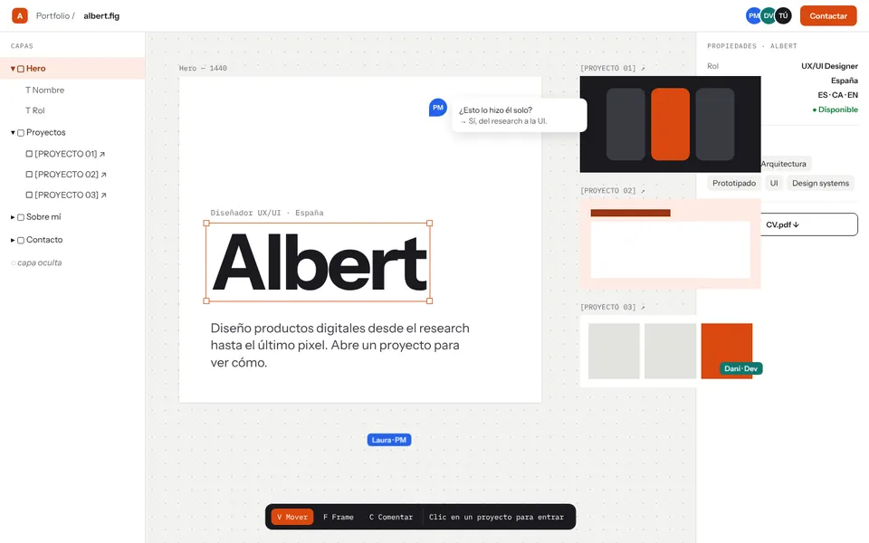

# Making-of — albert.fig
en una tardeuna sola conversación larga, pantalla a pantalla.
◇ PROCESO · ESTA WEB
Cómo hice esta web
La diseñé conversando con una IA (Claude): yo ponía las ideas, las referencias y el criterio; ella proponía, construía y yo corregía mirando la pantalla. Esto es lo que pasó, de la primera idea a la última versión.
# 01 — Inspiración
tres referenciaslas analicé para entender qué me gustaba de cada una, no para replicarlas.
{{i.site}}ver ↗
{{i.what}}
LO QUE ME INSPIRÓ
{{i.took}}
# 02 — De dónde partimos
cuatro caminosantes de decidir, ver varias opciones lado a lado.
Pedí cuatro alternativas para el inicio de la web. Salieron cuatro metáforas, cada una diseñada como pantalla:

Dudaba entre la 1 y la 2, así que probamos un híbrido. Al verlo, el problema era otro: todo estaba en una sola pantalla. Ahí nació la estructura actual: frames separados en un lienzo, como hojas de un archivo de Figma.
# 03 — Iteraciones: lo que pedí y lo que se propuso
mis promptsresumidos y con las faltas corregidas.
{{t.n}}
{{t.phase}}“{{t.ask}}”
{{t.tag}}{{t.did}}
# 04 — Previews que fuimos generando
para decidirantes de cambiar la web, ver las opciones en una imagen.
# 05 — Lo que se quedó por el camino
quitar también es diseñarcada cosa que se fue dejó la web más clara.
{{k.name}}{{k.why}}
# 06 — En números
{{s.v}}{{s.k}}